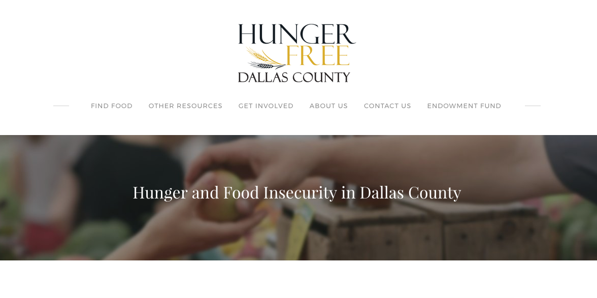
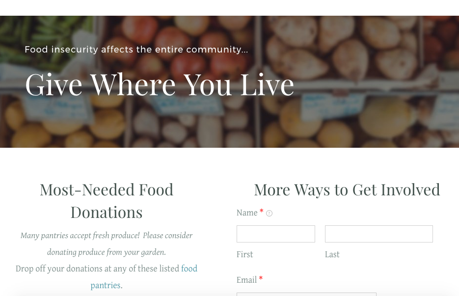

ABOUT THE PROJECT
Through the AIGA Design Assign program, I was partnered with the Hunger Free Dallas County coalition. They were in need of a website that contained information about their purpose and resources where people could locate various food sources. Due to irregular content updates, the client needed a site that could be easily updated by anyone within their coalition. Because of this need and a limited budget, I determined that Weebly was the best site-builder for their needs. With no pre-existing site, I gathered content from various informational materials and worked with the coalition to determine how they wanted their content presented. After determining the layout and adding in the content, I then added high-quality, free-for-commercial use images to the site. After building the site, I worked with the client to add Google Analytics and improve the site SEO. After the project was finished, I walked through the site with the client and provided a tutorial showing how to complete tasks and re-create various content features.
View the Hunger Free Dallas County site.

